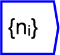

Next: Statistical Operations
Up: Tensor operations
Previous: Size
Contents

The operator can be placed on the canvas in two ways:
- From the Tensor Operations (``tensor'') toolbar
 ;
or
;
or
- By typing the letters ``shape'' on the canvas and then pressing the
Enter key.
Returns a vector of axis sizes. Coupling this operation with a
gather operation and variable would allow
you interactively select axis size.